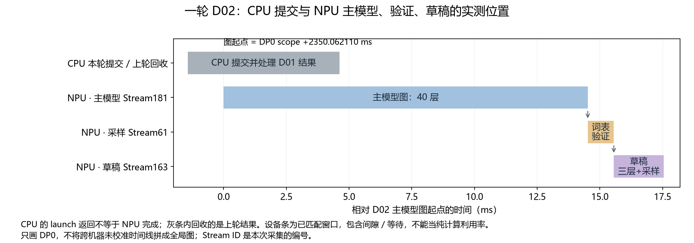

DEEPINFER / TRACE STUDY · 2026-10-29
从 Token 到 Token：一步步看懂 DeepInfer
展开章节目录
这篇文章按“请求 → 主模型 → 草稿模型 → 算子”展开。读完后，先能讲清一个token怎样产生，再用trace核对每一步。
建议分三遍读。 第一遍顺着七步讲解走，暂时跳过“看一下trace”；第二遍看四段流程图和次数表；第三遍打开trace，做四处定位核对。无需一开始就记住所有Task ID。
本文沿用同一份采集：每路DP（数据并行）处理两条请求，输入共50个token；主模型40层，DFlash草稿模型3层，每轮最多提出5个候选。下文默认讲DP0的 continuous-dp0.json，不把两路DP混在一起计数。
| 先记住四个词 | 本文中的意思 |
|---|---|
| token | 分词后的一个编号，不一定对应一个汉字或单词 |
| prefill / decode | 先处理输入上下文；随后逐轮生成答案 |
| forward | 一个batch完整经过主模型或草稿模型一次 |
| kernel / 设备图 | kernel是NPU上的一项实际任务；设备图把一串任务预先录下，后续可直接重放 |
先看全局：71次forward在忙什么
一轮推理的分工是：forward计算主模型特征，sample确定输出token，post_process收集结果并更新请求状态。 ZOS通过重叠CPU与设备工作减少调度空隙：提交本轮forward后，先回收上一轮结果，因此CPU时间线的实际顺序常是“本轮forward → 上轮post_process → 本轮sample”；prefill会再当场回收本轮结果。
这份DP0 trace的71次 launch_forward 都是主模型调用，按顺序分成五段：
| 总序号 | 完整事件名 | 次数 | 在做什么 |
|---|---|---|---|
| 01～36 | deepinfer:launch_forward_N1_B1 |
36 | 开头占位，不产生真实请求输出 |
| 37 | deepinfer:launch_forward_N2_B50 |
1 | 两请求28+22个输入token，共同prefill |
| 38～59 | deepinfer:launch_forward_N2_B12 |
22 | 两请求各有基础token+5个候选槽，共12个位置，主模型decode |
| 60～70 | deepinfer:launch_forward_N1_B6 |
11 | A退出后，只给B的6个位置做主模型decode |
| 71 | deepinfer:launch_forward_N1_B1 |
1 | 末尾占位，不产生真实请求输出 |
N是请求槽位数，B是本轮逻辑输入token数。prefill后利用KV缓存，不再重算整个输入；decode一次可能接受多个候选，所以forward次数不等于输出token数。占位也执行模型，但单独记账。
prefill这次逐步提交模型运算，CPU条长153.372 ms；decode主要提交已录制设备图的重放，CPU条通常只有约130～190 μs，NPU主模型窗口仍约13～15 ms。草稿模型在后面的 deepinfer:launch_sample 路径运行，不包含在这71次主模型forward计数里。
先看这五段即可；需要逐条对trace时，打开71次forward完整清单，每次都有CPU起止时间、CPU耗时和对应设备窗口。
打开trace时，再看这段定位说明
本文使用 continuous-dp0.json：CPU线程698287，NPU进程715046336。所有 +ms 从 capture:real_requests_prefill_through_completion 起点计；若工具以文件最早事件归零，表中时间再加 10.275189 ms。
搜索同名事件后，再核对 Stream、起止时间、Duration（持续时间）、Task ID。图重放可能复用Task ID，所以不能只看名字或编号。CPU条和NPU条上下排列，也不代表严格的父子嵌套：CPU返回时，设备任务可能还在执行。
第一步：把文字变成向量
分词把文字变成 token ID。Embedding 按每个 ID 查出一个5120维向量，50个 token 得到 [50,5120]。此时还没有生成答案，只是准备好了输入。
接着 CP8（8路上下文并行）分配工作。本例经过逐序列镜像切分和 padding，每卡分到8行；rank0其中4行来自真实输入，另4行用于补齐。50是整个请求批次的输入数，8是本卡接下来计算的行数。
这些向量会逐层更新；KV cache 保存 Attention 需要的历史信息，后续生成可以直接读取，省去重复计算整段输入。
看一下 trace ①：从153 ms的大范围找到入口
先搜全名 deepinfer:launch_forward_N2_B50：CPU线程698287，+1302.471390～1455.843050 ms，持续153.371660 ms。Duration 约153 ms 就匹配上了；这是一批两条请求、50个输入 token 的主模型 prefill 提交过程。
它持续期间，NPU 逐步执行入口准备、40层主模型、草稿历史 KV 准备和输出恢复。关联的 kernel 分布在 Stream61（1467条）和 Stream24（48条 CP AllGather）。按每条 kernel 的 Duration 求和，MegaMoE 40次共 6.146 ms，Attention 核心40次共 0.709 ms，mHC六类 kernel 共 2.020 ms，CP通信/屏障共 0.643 ms，其他任务共 5.029 ms，合计 14.546 ms。
153 ms 是 CPU 区间长度，14.546 ms 是关联设备 kernel 时长之和。 它们不能相减后直接认定为某一种开销；任务之间还存在空隙，CPU提交和同步会影响时间线，单凭这两个数无法逐项归因。这也不是首 token 的完整端到端时延，后面还有 LM Head 与采样。
现在只看入口：以这条 CPU 事件左边界为零，向右 0.809576 ms，在 Stream61 放大到约 0.05～0.10 ms 的视野。应找到：
| 完整事件名（可复制搜索） | +起止时间 ms | 耗时 μs | Stream / Task ID | 在做什么 |
|---|---|---|---|---|
_gather_kernel |
1303.280966～1303.286958 | 5.992 | 61 / 218110 | Embedding：50个 token ID 查成50行5120维向量 |
_prepare_cp_mirror_kernel |
1303.286980～1303.296934 | 9.954 | 61 / 218111 | 准备 CP mirror 索引和布局；后续选出本卡的8行 |
第一条距 CPU 起点 0.809576 ms，第二条距起点 0.815590 ms，它们首尾几乎相接。两条分别只有约6和10 μs，在153 ms视野下很难显示文字标签。
核对到这里即可： CPU Duration约153.372 ms；Stream61上 Task218110 → 218111，耗时5.992 → 9.954 μs。它们是大段计算的入口，不是两个覆盖整段 prefill 的大算子。
第二步：看懂一层，再重复40层
进入第一层时，每个5120维向量先复制四份，形成四路主干；此后各层持续更新这四份状态。一层的计算主线是：
四路主干 → mHC读出一路 → Attention → 写回四路
→ mHC读出一路 → Gate + MegaMoE → 写回四路
mHC：决定从哪里读，往哪里写
四路主干是四份持续更新的特征。mHC 根据当前特征计算混合系数，决定怎样组合成一路输入、怎样把子层输出写回四路，以及旧信息怎样在各路间交换。
所以，一层只有一次 Attention、一次 MegaMoE；四路主干不会让它们各跑四遍。围绕 Attention、MoE 各有一组 mHC，一层共两组。
本模型的部分混合系数传给下一子层，写回也可能延后。因此 trace 中会看到上一子层的 mhc_post_fwd_asc_kernel，接着是下一子层的读出与系数计算。
相邻两次post通常只推进一个子层，Attention、MoE交替，不能直接把它们当成重复的完整层。以2.825 μs的post为起点，可打开四个连续post间区间的逐算子解释：从Stream169的Task33165开始，四段共73个kernel，逐条列出全名、起止时间、耗时和作用。
Attention：让当前位置读取上下文
先把输入投影成 Q 和 KV。Q 用来查询，KV 提供可读取的上下文；一部分层还会压缩 KV、选择历史位置，共享层可以复用源层的数据。
接着计算 Q 与允许访问的 K 的匹配分数，归一化后对 V 加权求和，再经过输出投影，回到5120维。途中还有 Norm、RoPE 和量化，分别用于调整数值尺度、编码位置、转换计算或存储精度。
这些步骤可能融合。例如，第一层的 Q 降维和 SWA（滑动窗口 Attention）KV 投影共用一次 GEMM，输出1792维，再拆成1280与512；Norm、RoPE、量化和 KV 写入也可能合在一个 kernel 里。
Gate 和 MegaMoE：让选中的专家处理特征
Attention 结果写回主干后，mHC 再读出一路交给 MoE。Gate 对384个逻辑专家打分，选择6个并给出权重；EPLB 提供的映射将它们对应到物理槽位。
接下来是你熟悉的 MegaMoE：分发输入，执行专家的两次 GEMM 和中间激活，再加权汇聚，并加入共享专家路径。结果回到5120维，写回主干，进入下一层。
看一下 trace ②：在同一次 prefill 中认出第一层
仍用上面的 deepinfer:launch_forward_N2_B50 定位。Stream61 的第一层，从第一次 mHC 读出到 MegaMoE 结束是 +1303.962413～1309.517126 ms，跨度约 5.554714 ms。这段还穿插投影、Norm、RoPE、缓存处理与 CP 通信；下面只挑能认出层骨架的事件，不能将这几行耗时相加当作整层时延。
| 完整事件名（可复制搜索） | +起止时间 ms | 耗时 μs | Stream / Task ID | 在做什么 |
|---|---|---|---|---|
mhc_pre_apply_mix_fwd_asc_kernel |
1303.962413～1303.965345 | 2.932 | 61 / 218126 | mHC把四路主干读成一路，供 Attention 使用 |
随后有系数计算和 Attention 的输入投影。Attention 核心全名是：
Attention核心：读取上下文并加权汇聚
展开完整kernel名称，复制到trace搜索
_ZN6ascend7prefill10sparse_fwd22sparse_attn_fwd_kernelINS1_6KernelIXtlNS1_6ConfigEL17SparseAttnFwdMode0ELj64ELj640ELb1EEEEEEEvNT_6ParamsENS7_9AuxParamsE
Stream61 / Task ID 218167；+1307.395092～1307.408969 ms，耗时 13.877 μs。
输出投影后，回到这些短名称：
| 完整事件名（可复制搜索） | +起止时间 ms | 耗时 μs | Stream / Task ID | 在做什么 |
|---|---|---|---|---|
mhc_post_fwd_asc_kernel |
1308.175549～1308.179298 | 3.749 | 61 / 218174 | mHC写回 Attention 结果 |
mhc_pre_apply_mix_fwd_asc_kernel |
1308.303706～1308.306799 | 3.093 | 61 / 218175 | 下一组mHC读出 MoE 输入 |
moe_topk_gate_forward_kernel_asc_kernel |
1309.251357～1309.257037 | 5.680 | 61 / 218183 | Gate投影之后，挑出Top6专家及权重 |
再找到本层 MegaMoE 的完整名称：
MegaMoE：分发、专家计算与汇聚
展开完整kernel名称，复制到trace搜索
_ZN9deep_gemm8mega_moe13mega_moe_implILj16ELj416ELj1ELj512ELj6ELj5120ELj2304EEEvPu6__bf16PiPKhPKsS5_S7_S5_S7_S5_S7_jfNS_6layout9SymBufferILj256EEE
Stream61 / Task ID 218185；+1309.349722～1309.517126 ms，耗时 167.405 μs。
核对到这里即可： 同一条Stream61上依次出现 mHC读出 → Attention核心 → mHC写回/下一次读出 → Top6 → MegaMoE。第一层 Attention 核心约13.877 μs，MegaMoE约167.405 μs；5.555 ms的观察窗口还包含其他任务和任务间空隙。
第三步：两处 Engram 给主干补充特征
Engram 位于主模型第2、15层，也就是从0编号的 L01、L14。它根据附近的 token 组合计算 hash，查训练得到的表项，投影后形成特征，再用门控系数注入四路主干。
注入之后，本层仍执行 Attention 和 MoE。
实现上，两层需要的表项在模型开头统一预取。因此 trace 中是 一次 hash、一次 fetch，随后两次 Engram gate 应用。查表提前发生，消费发生在对应层，两者不必挨在一起。
想核对两次“消费”时，看同名事件的以下两个位置即可；耗时只指 gate kernel，不含前面的投影：
| 完整事件名（可复制搜索） | +起止时间 ms | 耗时 μs | Stream / Task ID | 在做什么 |
|---|---|---|---|---|
engram_gate_fwd_kernel_asc_kernel |
1309.714912～1309.719369 | 4.457 | 61 / 218188 | L01：将预取、投影后的Engram特征注入主干 |
engram_gate_fwd_kernel_asc_kernel |
1357.622210～1357.625842 | 3.632 | 61 / 218805 | L14：第二次Engram注入 |
现在可以记住：主模型走40层，每层有 Attention、MegaMoE 和两组 mHC；其中两层额外注入 Engram。
第四步：产生第一个答案 token
主模型在末三层的 Attention 输入处，各提取一份四路主干的均值特征。三份特征拼接后，经过投影与归一化，生成三个草稿层需要的历史 KV。主模型每次 prefill、decode 都会执行这条路径。
为草稿写历史 KV，不等于运行草稿三层。 此时没有执行完整的草稿 Attention 和 MegaMoE。三处提取特征的完整名相同，靠时间和Task区分：
| 完整事件名（可复制搜索） | +起止时间 ms | 耗时 μs | Stream / Task ID | 在做什么 |
|---|---|---|---|---|
_dflash_input_store_ascend_kernel |
1441.335761～1441.339107 | 3.346 | 61 / 219893 | L37的Attention输入特征，供草稿历史KV使用 |
_dflash_input_store_ascend_kernel |
1446.083873～1446.086680 | 2.807 | 61 / 219938 | L38的Attention输入特征，供草稿历史KV使用 |
_dflash_input_store_ascend_kernel |
1450.534484～1450.537426 | 2.942 | 61 / 219985 | L39的Attention输入特征，供草稿历史KV使用 |
随后草稿历史KV准备分布在 +1453.230621～1455.087977 ms，跨度1.857356 ms；相关19个kernel累计125.139 μs，包含投影、Norm、三层缓存写入及CP交换。这个跨度不是一个kernel的Duration。
主模型随后补齐末层写回，把四路主干合并为一路，做输出 Norm。Prefill 下还要通过 CP 汇聚、去 padding，恢复50个输入位置的输出。
接着，每条请求各选最后一个有效位置，得到两个5120维向量。LM Head 把它们投影成词表分数，再采样，得到两条请求各自的首 token。
每请求只选最后一行，是因为前面的输入已经参与计算并建立上下文；整次 prefill 仍计算了全部输入位置。
在trace上，首 token 的设备采样段落在 Stream61 的 +1458.382582～1458.938071 ms，跨度0.555489 ms，晚于前面的 CPU forward 结束。先选两行，再执行词表投影：
LM Head：两个5120维向量投影成词表分数
展开完整kernel名称，复制到trace搜索
_ZN9deep_gemm14bf16_gemm_implILNS_5MajorE0ELS1_0ELj0ELj129280ELj5120ELj16ELj512ELj128ELj16ELj256ELj64ELj3ELj2ELj16ELj32EL22asc_load_l2_cache_mode0ELS2_4EL23asc_store_l2_cache_mode4ELb0ELNS_8GemmTypeE0EfNS_8epilogue9operators8IdentityELj256ELb1ELb0ELb0EEEvNS_6gm_ptrIu6__bf16XT_EEENS8_Iu6__bf16XT0_EEENS8_IT19_LS1_0EEEjjjPijNS5_4ArgsE
Stream61 / Task ID 220106；+1458.453571～1458.848168 ms，耗时 394.597 μs。
随后 aclnnTopk_TopkV2AiCoreForDavid_TopKV2 在 +1458.848190～1458.928047 ms，耗时79.857 μs，Task220107；_fused_sample_kernel 在 +1458.930142～1458.938071 ms，耗时7.929 μs，Task220109。后者才选出两个首 token。
第五步：主模型检查一串候选
有了完整草稿提案后，每条请求的主模型输入形如：
g, d1, d2, d3, d4, d5
g 是已经产生、这轮送进主模型的基础 token，d1～d5 是上一轮草稿提出的候选。第一次进入 decode 时提案还需初始化，不能把五个槽位都当成已有的有效草稿。
两条请求共12个逻辑位置，本次选择16行图执行。它们仍经过主模型40层；Attention 读取历史 KV，并处理当前输入，末尾也更新草稿历史 KV。
这次不能每请求只对最后一行做 LM Head：主模型需要各位置的词表分布，逐个判断候选前缀能否接受。
例如，接受 a、b，到 c 首次拒绝，由主模型给出替代 token r。假设未遇结束或输出上限：
本轮输入：g, a, b, c, d, e
本轮新输出：a, b, r
下一轮基础 token：r
检查6个逻辑位置，可能只新增3个输出。这个例子中，新增有效主模型 KV 对应 g、a、b；r 自己的主模型 KV 通常要在下一轮计算。未接受的草稿不能继续作为正确历史使用。
第六步：草稿走三层，提出下一组候选
验证得到新基础 token 后，草稿为每条请求建立五槽输入：
新基础 token, noise, noise, noise, noise
noise 是配置的专用 token。两条请求展开为10行，查 embedding 后，一次通过草稿3层。每层仍有 Attention、MegaMoE 和两组 mHC，没有 Engram；Attention 使用主模型特征形成的历史缓存，以及本轮草稿位置的 KV。
三层结束后做末端主干合并、Norm，再用一次 LM Head 处理这10行。随后针对五个位置，分别进行 Markov 词表修正、confidence 计算和采样。
Markov 修正让前一个采样 token 参与后一个位置的词表分数计算；confidence 估计候选被主模型接受的概率，不是答案事实正确率。
最后保存候选及相关分布，交给下一轮主模型验证。五个候选对应五个采样位置，不是把三层模型完整运行五遍。
看一下 trace ③：把主模型、验证、草稿接起来
搜全名 deepinfer:launch_forward_N2_B12，找到 +2349.943770～2350.119020 ms 这一条，CPU线程698287，持续 175.250 μs，将这一轮记作 D02。用时间和耗时定位，不依赖搜索结果的排列顺序。
这次 CPU 很快提交图就返回。主模型设备图在 Stream181，Model ID 62，窗口 +2350.062110～2364.579766 ms，持续 14.517656 ms。里面仍是40层，实际 kernel 累计13.227858 ms；它并不是175 μs跑完40层。
主模型结束后，去 Stream61 看验证段：+2364.743061～2365.618229 ms，跨度 0.875168 ms。先去图padding、做主模型 LM Head，再挑词表候选、采样和统计接受前缀。LM Head 全名与第四步相同，这里的Task ID是239377，+2364.747249～2365.165064 ms，417.815 μs。
| 完整事件名（可复制搜索） | +起止时间 ms | 耗时 μs | Stream / Task ID | 在做什么 |
|---|---|---|---|---|
aclnnTopk_TopkV2AiCoreForDavid_TopKV2 |
2365.173453～2365.574444 | 400.991 | 61 / 239380 | 选词表TopK：400.991 μs是本段的大头之一 |
_get_accept_result_kernel |
2365.598386～2365.601912 | 3.526 | 61 / 239385 | 统计本轮接受的候选前缀 |
_finalize_verification_kernel |
2365.606233～2365.607412 | 1.179 | 61 / 239387 | 整理验证结果 |
_finalize_verification_kernel_1 |
2365.607434～2365.614370 | 6.936 | 61 / 239388 | 验证结果的第二部分整理 |
_copy_dflash_decode_input_kernel |
2365.614393～2365.618229 | 3.836 | 61 / 239389 | 准备接下来草稿图所需的输入 |
然后去 Stream163，Model ID 56 看草稿图。图窗口 +2365.618300～2367.608871 ms，持续 1.990571 ms；第一条实际kernel从+2365.780215 ms开始。三层草稿中，MegaMoE全名如下（三次完全相同）：
展开完整kernel名称，复制到trace搜索
_ZN9deep_gemm8mega_moe13mega_moe_implILj16ELj160ELj1ELj512ELj3ELj5120ELj2304EEEvPu6__bf16PiPKhPKsS5_S7_S5_S7_S5_S7_jfNS_6layout9SymBufferILj256EEE
| 草稿层（从0编号） | +起止时间 ms | 耗时 μs | Task ID（均在Stream163） |
|---|---|---|---|
| 0 | 2365.966723～2366.075276 | 108.553 | 35079 |
| 1 | 2366.232587～2366.327355 | 94.768 | 35108 |
| 2 | 2366.485644～2366.583874 | 98.230 | 35137 |
三层后还有 LM Head、五个位置的修正和采样，均计在上面的1.991 ms草稿图窗口里。核对到这里即可： 175 μs的CPU提交 → Stream181上14.518 ms主模型 → Stream61上0.875 ms词表/验证 → Stream163上1.991 ms草稿图。各窗口间可能有间隔，不能机械相加当作整轮端到端时延。
第七步：CPU 可能正在回收上一轮结果
CPU 提交计算后，NPU 可以继续异步执行。DeepInfer 的 ZOS 调度会利用这段时间：提交当前轮主模型，再处理上一轮结果，随后提交当前轮的验证与草稿任务。
所以，看到 deepinfer:build_request_outputs 时，要先问“它属于哪一轮”。CPU 已经提交 D02，不代表它正在返回 D02 的结果。

灰条包含本轮 CPU 提交和上轮结果回收；蓝、黄、紫条分别是本轮主模型、词表与验证、草稿图的设备窗口。条内可能包含等待，不能据此计算纯计算利用率。
看一下 trace ④：分清结果归属
搜全名 deepinfer:build_request_outputs，在CPU线程698287选 +2350.801730～2350.838990 ms 这一条，持续 37.260 μs。它比本轮 deepinfer:launch_forward_N2_B12 起点晚 0.857960 ms。
横向对照：D02主模型的Stream181设备图此时还在途，要到 +2364.579766 ms 才结束。因此，这条CPU事件是在组装上一轮D01输出。它的37.260 μs是CPU组装结果耗时，不是模型生成token的耗时。
核对到这里即可： 这条短CPU事件与当前主模型设备图在时间上重叠；CPU处理的是上轮结果。
再放大：四段逐算子流程图
前面已经看过请求如何经历forward、sample和结果回收。现在缩到同一个主模型forward内部：以Stream169的post Task33165为起点，展开四个相邻post区间。它们是 MoE → 带Engram的Attention → MoE → 带KV压缩/索引的Attention，跨L00～L02；不是四次完整模型推理，也不是四个完整层。
 点图查看原图
点图查看原图
先读图例。 这段是Z01占位执行，逻辑行数为1；图中的耗时来自这段trace，不能代替真实请求性能。所有图都按执行顺序排列，每框一条kernel，标出短名称、Task ID、Duration及主要输入/输出；完整kernel全名保留在逐算子附表。图可打开原图放大。
shape是固定源码接口推导的逻辑维度，不是逐张量实测：省略mHC外层的单例包装，view只是改视图、不新增kernel，权重常量没有逐项列出。FP4仍按逻辑元素数标shape；实际存储会打包并带缩放信息。
| 图中符号 | 含义 |
|---|---|
R[1,4,5120]、x[1,5120] |
四路残差主干、一次子层的一路特征 |
pre/post[1,4,1]、mix[1,4,4] |
四路读出/写回系数、残差路间混合矩阵 |
SF |
FP8/FP4缩放因子；不同kernel可能要求不同打包/布局，未在trace记录的物理维度不补数字 |
Lmax、Kidx |
索引评分缓冲的历史容量、配置的历史TopK宽度；有效历史可能小于容量，不能从kernel模板数字直接推断 |
state[S,R,2,512] |
KV压缩状态：S个状态槽、R个环形位置、score/latent两份512维数据；S/R容量未随trace记录 |
metadata、KV缓存、T[?] |
分页调度信息及历史状态。metadata物理布局依赖后端，缓存容量依赖运行配置；Task33229转置的具体输入维度未记录，用T[?]明确保留未知项 |
箭头表示提交后的实际执行顺序，不表示上一框输出是下一框的全部输入。例如Engram投影读取预取表项，系数GEMM读取四路主干，Attention同时消费先前准备的Q和KV。
① 写回L00 Attention，再做L00 MoE
① 先写回上一段Attention，再准备并执行L00 MoE。10条kernel，区间68.381 μs；post本身2.825 μs，专家计算由后面的MegaMoE完成。
查看本段10步：shape · 耗时 · Trace定位
按序号从左向右逐行读；手机上自动排成单列。箭头表示执行顺序，框宽不代表耗时。
01 写回四路主干
Task 33165 · 2.825 μs
- 输入
x[1,5120] + R[1,4,5120]
post[1,4,1] + mix[1,4,4]- 输出
R′[1,4,5120]
完整kernel名称
mhc_post_fwd_asc_kernel02 四路读成一路
Task 33166 · 2.477 μs
- 输入
R[1,4,5120] + pre[1,4,1]- 输出
x[1,5120]
完整kernel名称
mhc_pre_apply_mix_fwd_asc_kernel03 计算混合系数
Task 33167 · 8.295 μs
- 输入
R[1,4,5120] → 展平[1,20480]- 输出
系数中间量[1,24] + 平方和[1]
完整kernel名称
tf32_hc_prenorm_gemm_kernel_kernel04 归一化系数
Task 33168 · 2.384 μs
- 输入
系数中间量[1,24] + 平方和[1]- 输出
mixes[1,24]
完整kernel名称
mhc_reduce_partials_and_rmsnorm_fwd_asc_kernel05 拆出混合系数
Task 33169 · 2.575 μs
- 输入
mixes[1,24]- 输出
pre/post各[1,4,1]
残差mix[1,4,4]
完整kernel名称
mhc_pre_split_mixes_fwd_simd_mhc4_asc_kernel06 Sinkhorn归一化
Task 33170 · 3.807 μs
- 输入
残差mix[1,4,4]- 输出
归一化mix[1,4,4]
完整kernel名称
mhc_sinkhorn_fwd_asc_kernel07 子层输入RMSNorm
Task 33171 · 4.033 μs
- 输入
x[1,5120]- 输出
x_norm[1,5120]（含所需格式）
完整kernel名称
_norm_kernel08 专家Gate投影
Task 33172 · 4.065 μs
- 输入
x[1,5120]- 输出
专家分数[1,384]
完整kernel名称
_ZN9deep_gemm14bf16_gemm_implILNS_5MajorE0ELS1_0ELj0ELj384ELj5120ELj16ELj16ELj2048ELj16ELj16ELj1024ELj5ELj2ELj1ELj32EL22asc_load_l2_cache_mode0ELS2_4EL23asc_store_l2_cache_mode4ELb0ELNS_8GemmTypeE0EfNS_8epilogue9operators8IdentityELj256ELb1ELb1ELb0EEEvNS_6gm_ptrIu6__bf16XT_EEENS8_Iu6__bf16XT0_EEENS8_IT19_LS1_0EEEjjjPijNS5_4ArgsE09 选择Top6专家
Task 33173 · 3.758 μs
- 输入
专家分数[1,384]- 输出
专家ID[1,6] + 权重[1,6]
完整kernel名称
moe_topk_gate_forward_kernel_asc_kernel10 专家计算与汇聚
Task 33175 · 33.464 μs
- 输入
x[1,5120] + ID/权重[1,6]- 输出
MoE输出[1,5120]
完整kernel名称
_ZN9deep_gemm8mega_moe13mega_moe_implILj16ELj416ELj1ELj512ELj6ELj5120ELj2304EEEvPu6__bf16PiPKhPKsS5_S7_S5_S7_S5_S7_jfNS_6layout9SymBufferILj256EEE
② 写回L00 MoE，再做L01 Engram＋Attention
② 先写回L00 MoE，再注入Engram，接着运行L01 Attention。21条kernel，区间167.237 μs；Engram投影单独54.567 μs。
查看本段21步：shape · 耗时 · Trace定位
按序号从左向右逐行读；手机上自动排成单列。箭头表示执行顺序，框宽不代表耗时。
01 写回四路主干
Task 33176 · 2.791 μs
- 输入
x[1,5120] + R[1,4,5120]
post[1,4,1] + mix[1,4,4]- 输出
R′[1,4,5120]
完整kernel名称
mhc_post_fwd_asc_kernel02 Engram特征投影
Task 33177 · 54.567 μs
- 输入
预取表项[1,6144]- 输出
特征[1,25600] → view[1,5,5120]
完整kernel名称
_ZN9deep_gemm13fp8_gemm_implILNS_5MajorE0ELS1_0ELj0ELj25600ELj6144ELj16ELj416ELj256ELj16ELj208ELj128ELj4ELj2ELj11ELj2ELj4ELj32EL22asc_load_l2_cache_mode0ELS2_4EL23asc_store_l2_cache_mode4ELb0ELNS_8GemmTypeE0Eu9__fp8e4m3u6__bf16NS_8epilogue9operators8IdentityELj256ELb0ELb1EEEvNS_6gm_ptrIT21_XT_EEENS8_IS9_XT0_EEEPsSC_NS8_IT22_LS1_0EEEjjjPijNS5_4ArgsE03 门控注入主干
Task 33178 · 3.678 μs
- 输入
R[1,4,5120] + 特征[1,5,5120]- 输出
更新后的R[1,4,5120]
完整kernel名称
engram_gate_fwd_kernel_asc_kernel04 四路读成一路
Task 33179 · 2.686 μs
- 输入
R[1,4,5120] + pre[1,4,1]- 输出
x[1,5120]
完整kernel名称
mhc_pre_apply_mix_fwd_asc_kernel05 计算混合系数
Task 33180 · 8.690 μs
- 输入
R[1,4,5120] → 展平[1,20480]- 输出
系数中间量[1,24] + 平方和[1]
完整kernel名称
tf32_hc_prenorm_gemm_kernel_kernel06 归一化系数
Task 33181 · 2.113 μs
- 输入
系数中间量[1,24] + 平方和[1]- 输出
mixes[1,24]
完整kernel名称
mhc_reduce_partials_and_rmsnorm_fwd_asc_kernel07 拆出混合系数
Task 33182 · 2.626 μs
- 输入
mixes[1,24]- 输出
pre/post各[1,4,1]
残差mix[1,4,4]
完整kernel名称
mhc_pre_split_mixes_fwd_simd_mhc4_asc_kernel08 Sinkhorn归一化
Task 33183 · 3.840 μs
- 输入
残差mix[1,4,4]- 输出
归一化mix[1,4,4]
完整kernel名称
mhc_sinkhorn_fwd_asc_kernel09 子层输入RMSNorm
Task 33184 · 3.886 μs
- 输入
x[1,5120]- 输出
x_norm[1,5120]（含所需格式）
完整kernel名称
_norm_kernel10 联合投影Q_a与SWA KV
Task 33185 · 5.925 μs
- 输入
x[1,5120]- 输出
[1,1792] → Q_a[1,1280]
及SWA KV[1,1,512]
完整kernel名称
_ZN9deep_gemm13fp8_gemm_implILNS_5MajorE0ELS1_0ELj0ELj1792ELj5120ELj16ELj64ELj512ELj16ELj64ELj256ELj4ELj2ELj10ELj2ELj1ELj32EL22asc_load_l2_cache_mode0ELS2_4EL23asc_store_l2_cache_mode4ELb0ELNS_8GemmTypeE0Eu9__fp8e4m3u6__bf16NS_8epilogue9operators8IdentityELj256ELb1ELb1EEEvNS_6gm_ptrIT21_XT_EEENS8_IS9_XT0_EEEPsSC_NS8_IT22_LS1_0EEEjjjPijNS5_4ArgsE11 处理并写入SWA KV
Task 33186 · 3.066 μs
- 输入
SWA KV[1,1,512] + position[1]- 输出
逻辑KV[1,1,512]（缓存格式）
及SWA缓存更新
完整kernel名称
_fused_norm_rope_hadamard_cast_store_kvcache_kernel12 低秩Q归一化
Task 33187 · 2.870 μs
- 输入
Q_a[1,1280]- 输出
Q_a_norm[1,1280]
完整kernel名称
_norm_kernel13 展开主Attention Q
Task 33188 · 17.932 μs
- 输入
Q_a[1,1280]- 输出
[1,32768] → view Q[1,64,512]
完整kernel名称
_ZN9deep_gemm13fp8_gemm_implILNS_5MajorE0ELS1_0ELj0ELj32768ELj1280ELj16ELj512ELj256ELj16ELj256ELj128ELj3ELj2ELj5ELj2ELj4ELj32EL22asc_load_l2_cache_mode0ELS2_4EL23asc_store_l2_cache_mode4ELb0ELNS_8GemmTypeE0Eu9__fp8e4m3u6__bf16NS_8epilogue9operators8IdentityELj256ELb1ELb1EEEvNS_6gm_ptrIT21_XT_EEENS8_IS9_XT0_EEEPsSC_NS8_IT22_LS1_0EEEjjjPijNS5_4ArgsE14 归一化/旋转主Q
Task 33189 · 2.680 μs
- 输入
主Q[1,64,512] + position[1]- 输出
主Q[1,64,512]（所需计算格式）
完整kernel名称
_fused_norm_rope_hadamard_cast_store_kvcache_kernel15 L01上下文汇聚
Task 33190 · 6.160 μs
- 输入
Q[1,64,512] + SWA历史KV- 输出
context[1,64,512]
完整kernel名称
_ZN6ascend7prefill10sparse_fwd22sparse_attn_fwd_kernelINS1_6KernelIXtlNS1_6ConfigEL17SparseAttnFwdMode1ELj64ELj640ELb1EEEEEEEvNT_6ParamsENS7_9AuxParamsE16 输出逆向RoPE
Task 33191 · 2.646 μs
- 输入
context[1,64,512]- 输出
旋转后的context[1,64,512]
完整kernel名称
_rope_kernel_kernel17 上下文转FP8
Task 33192 · 3.920 μs
- 输入
context[1,32768]（view）- 输出
FP8[1,32768] + SF
完整kernel名称
per_token_cast_kernel_kernel18 重排FP8缩放因子
Task 33193 · 2.026 μs
- 输入
SF（量化缩放信息）- 输出
相同逻辑SF，换成GEMM所需布局
完整kernel名称
_ZN9deep_gemm12transform_sfILb0ELNS_5MajorE0ELj128ELj128ELNS_8GemmTypeE3ELj64ELj256ELj1EL22asc_load_l2_cache_mode4EL23asc_store_l2_cache_mode0EEEvNS_6gm_ptrINSt11conditionalIXT_EjtE4typeEXT0_EEEPtPijjjjjj19 分组输出投影Wv
Task 33194 · 13.907 μs
- 输入
FP8[1,8,4096] + SF（view）- 输出
Wv结果[1,8,1024]
完整kernel名称
_ZN9deep_gemm13fp8_gemm_implILNS_5MajorE0ELS1_0ELj0ELj1024ELj4096ELj16ELj256ELj512ELj16ELj256ELj128ELj3ELj2ELj8ELj2ELj1ELj32EL22asc_load_l2_cache_mode0ELS2_4EL23asc_store_l2_cache_mode4ELb0ELNS_8GemmTypeE3Eu9__fp8e4m3u6__bf16NS_8epilogue9operators8IdentityELj256ELb0ELb0EEEvNS_6gm_ptrIT21_XT_EEENS8_IS9_XT0_EEEPsSC_NS8_IT22_LS1_0EEEjjjPijNS5_4ArgsE20 Wv结果转FP8
Task 33195 · 3.569 μs
- 输入
Wv结果[1,8192]（view）- 输出
FP8[1,8192] + SF
完整kernel名称
per_token_cast_kernel_kernel21 合并输出投影Wo
Task 33196 · 17.197 μs
- 输入
FP8[1,8192] + SF（view）- 输出
子层输出[1,5120]
完整kernel名称
_ZN9deep_gemm13fp8_gemm_implILNS_5MajorE0ELS1_0ELj0ELj5120ELj8192ELj16ELj160ELj256ELj16ELj160ELj128ELj4ELj2ELj32ELj2ELj1ELj32EL22asc_load_l2_cache_mode0ELS2_4EL23asc_store_l2_cache_mode4ELb0ELNS_8GemmTypeE0Eu9__fp8e4m3u6__bf16NS_8epilogue9operators8IdentityELj256ELb1ELb1EEEvNS_6gm_ptrIT21_XT_EEENS8_IS9_XT0_EEEPsSC_NS8_IT22_LS1_0EEEjjjPijNS5_4ArgsE
③ 写回L01 Attention，再做L01 MoE
③ L01 MoE与第一段骨架相同，但输入内容、层参数与实测耗时不同。10条kernel，区间70.509 μs；不能把同名kernel当成同一次事件。
查看本段10步：shape · 耗时 · Trace定位
按序号从左向右逐行读；手机上自动排成单列。箭头表示执行顺序，框宽不代表耗时。
01 写回四路主干
Task 33197 · 2.956 μs
- 输入
x[1,5120] + R[1,4,5120]
post[1,4,1] + mix[1,4,4]- 输出
R′[1,4,5120]
完整kernel名称
mhc_post_fwd_asc_kernel02 四路读成一路
Task 33198 · 2.566 μs
- 输入
R[1,4,5120] + pre[1,4,1]- 输出
x[1,5120]
完整kernel名称
mhc_pre_apply_mix_fwd_asc_kernel03 计算混合系数
Task 33199 · 8.463 μs
- 输入
R[1,4,5120] → 展平[1,20480]- 输出
系数中间量[1,24] + 平方和[1]
完整kernel名称
tf32_hc_prenorm_gemm_kernel_kernel04 归一化系数
Task 33200 · 2.586 μs
- 输入
系数中间量[1,24] + 平方和[1]- 输出
mixes[1,24]
完整kernel名称
mhc_reduce_partials_and_rmsnorm_fwd_asc_kernel05 拆出混合系数
Task 33201 · 2.707 μs
- 输入
mixes[1,24]- 输出
pre/post各[1,4,1]
残差mix[1,4,4]
完整kernel名称
mhc_pre_split_mixes_fwd_simd_mhc4_asc_kernel06 Sinkhorn归一化
Task 33202 · 3.306 μs
- 输入
残差mix[1,4,4]- 输出
归一化mix[1,4,4]
完整kernel名称
mhc_sinkhorn_fwd_asc_kernel07 子层输入RMSNorm
Task 33203 · 3.124 μs
- 输入
x[1,5120]- 输出
x_norm[1,5120]（含所需格式）
完整kernel名称
_norm_kernel08 专家Gate投影
Task 33204 · 3.832 μs
- 输入
x[1,5120]- 输出
专家分数[1,384]
完整kernel名称
_ZN9deep_gemm14bf16_gemm_implILNS_5MajorE0ELS1_0ELj0ELj384ELj5120ELj16ELj16ELj2048ELj16ELj16ELj1024ELj5ELj2ELj1ELj32EL22asc_load_l2_cache_mode0ELS2_4EL23asc_store_l2_cache_mode4ELb0ELNS_8GemmTypeE0EfNS_8epilogue9operators8IdentityELj256ELb1ELb1ELb0EEEvNS_6gm_ptrIu6__bf16XT_EEENS8_Iu6__bf16XT0_EEENS8_IT19_LS1_0EEEjjjPijNS5_4ArgsE09 选择Top6专家
Task 33205 · 3.570 μs
- 输入
专家分数[1,384]- 输出
专家ID[1,6] + 权重[1,6]
完整kernel名称
moe_topk_gate_forward_kernel_asc_kernel10 专家计算与汇聚
Task 33207 · 36.701 μs
- 输入
x[1,5120] + ID/权重[1,6]- 输出
MoE输出[1,5120]
完整kernel名称
_ZN9deep_gemm8mega_moe13mega_moe_implILj16ELj416ELj1ELj512ELj6ELj5120ELj2304EEEvPu6__bf16PiPKhPKsS5_S7_S5_S7_S5_S7_jfNS_6layout9SymBufferILj256EEE
④ 写回L01 MoE，再做L02压缩/索引＋Attention
④ L02 Attention增加了主KV压缩、索引Q/K准备、历史评分、历史TopK与地址转换。32条kernel，区间155.920 μs；不是“多执行了一遍Attention”。
查看本段32步：shape · 耗时 · Trace定位
按序号从左向右逐行读；手机上自动排成单列。箭头表示执行顺序，框宽不代表耗时。
01 写回四路主干
Task 33208 · 2.907 μs
- 输入
x[1,5120] + R[1,4,5120]
post[1,4,1] + mix[1,4,4]- 输出
R′[1,4,5120]
完整kernel名称
mhc_post_fwd_asc_kernel02 四路读成一路
Task 33209 · 2.189 μs
- 输入
R[1,4,5120] + pre[1,4,1]- 输出
x[1,5120]
完整kernel名称
mhc_pre_apply_mix_fwd_asc_kernel03 计算混合系数
Task 33210 · 8.454 μs
- 输入
R[1,4,5120] → 展平[1,20480]- 输出
系数中间量[1,24] + 平方和[1]
完整kernel名称
tf32_hc_prenorm_gemm_kernel_kernel04 归一化系数
Task 33211 · 1.950 μs
- 输入
系数中间量[1,24] + 平方和[1]- 输出
mixes[1,24]
完整kernel名称
mhc_reduce_partials_and_rmsnorm_fwd_asc_kernel05 拆出混合系数
Task 33212 · 2.589 μs
- 输入
mixes[1,24]- 输出
pre/post各[1,4,1]
残差mix[1,4,4]
完整kernel名称
mhc_pre_split_mixes_fwd_simd_mhc4_asc_kernel06 Sinkhorn归一化
Task 33213 · 3.552 μs
- 输入
残差mix[1,4,4]- 输出
归一化mix[1,4,4]
完整kernel名称
mhc_sinkhorn_fwd_asc_kernel07 子层输入RMSNorm
Task 33214 · 4.248 μs
- 输入
x[1,5120]- 输出
x_norm[1,5120]（含所需格式）
完整kernel名称
_norm_kernel08 投影压缩KV和索引权重
Task 33215 · 6.265 μs
- 输入
x[1,5120]- 输出
[1,1056] → score/latent各[1,512]
及索引头权重[1,32]
完整kernel名称
_ZN9deep_gemm14bf16_gemm_implILNS_5MajorE0ELS1_0ELj0ELj1056ELj5120ELj16ELj48ELj256ELj16ELj48ELj128ELj8ELj2ELj1ELj32EL22asc_load_l2_cache_mode0ELS2_4EL23asc_store_l2_cache_mode4ELb0ELNS_8GemmTypeE0EfNS_8epilogue9operators8IdentityELj256ELb1ELb1ELb0EEEvNS_6gm_ptrIu6__bf16XT_EEENS8_Iu6__bf16XT0_EEENS8_IT19_LS1_0EEEjjjPijNS5_4ArgsE09 索引权重转BF16
Task 33216 · 1.589 μs
- 输入
权重[1,32]，FP32- 输出
权重[1,32]，BF16
完整kernel名称
aclnnInplaceCopy_CastAiCore_Cast10 联合投影Q_a与SWA KV
Task 33217 · 5.971 μs
- 输入
x[1,5120]- 输出
[1,1792] → Q_a[1,1280]
及SWA KV[1,1,512]
完整kernel名称
_ZN9deep_gemm13fp8_gemm_implILNS_5MajorE0ELS1_0ELj0ELj1792ELj5120ELj16ELj64ELj512ELj16ELj64ELj256ELj4ELj2ELj10ELj2ELj1ELj32EL22asc_load_l2_cache_mode0ELS2_4EL23asc_store_l2_cache_mode4ELb0ELNS_8GemmTypeE0Eu9__fp8e4m3u6__bf16NS_8epilogue9operators8IdentityELj256ELb1ELb1EEEvNS_6gm_ptrIT21_XT_EEENS8_IS9_XT0_EEEPsSC_NS8_IT22_LS1_0EEEjjjPijNS5_4ArgsE11 处理并写入SWA KV
Task 33218 · 2.734 μs
- 输入
SWA KV[1,1,512] + position[1]- 输出
逻辑KV[1,1,512]（缓存格式）
及SWA缓存更新
完整kernel名称
_fused_norm_rope_hadamard_cast_store_kvcache_kernel12 低秩Q归一化
Task 33219 · 2.815 μs
- 输入
Q_a[1,1280]- 输出
Q_a_norm[1,1280]
完整kernel名称
_norm_kernel13 联合展开主Q和索引Q
Task 33220 · 17.330 μs
- 输入
Q_a[1,1280]- 输出
[1,36864] → 主Q[1,64,512]
及索引Q[1,32,128]
完整kernel名称
_ZN9deep_gemm13fp8_gemm_implILNS_5MajorE0ELS1_0ELj0ELj36864ELj1280ELj16ELj384ELj256ELj16ELj192ELj128ELj4ELj2ELj5ELj2ELj6ELj32EL22asc_load_l2_cache_mode0ELS2_4EL23asc_store_l2_cache_mode4ELb0ELNS_8GemmTypeE0Eu9__fp8e4m3u6__bf16NS_8epilogue9operators8IdentityELj256ELb1ELb1EEEvNS_6gm_ptrIT21_XT_EEENS8_IS9_XT0_EEEPsSC_NS8_IT22_LS1_0EEEjjjPijNS5_4ArgsE14 归一化/旋转主Q
Task 33221 · 2.585 μs
- 输入
主Q[1,64,512] + position[1]- 输出
主Q[1,64,512]（所需计算格式）
完整kernel名称
_fused_norm_rope_hadamard_cast_store_kvcache_kernel15 写入KV压缩状态
Task 33222 · 3.827 μs
- 输入
score/latent各[1,512]
context_len[1] + state[S,R,2,512]- 输出
更新state；输出缓冲[1,512]
完整kernel名称
_compress_and_update_state_decode_kernel16 完成当前组KV压缩
Task 33223 · 2.397 μs
- 输入
更新的state[S,R,2,512]- 输出
压缩KV[1,512]
是否有有效行由压缩组进度决定
完整kernel名称
_compress_and_update_state_decode_kernel_117 处理并写入压缩KV
Task 33224 · 3.492 μs
- 输入
压缩KV[1,1,512] + position_c[1]- 输出
pre-RoPE KV[1,512]
及主压缩KV缓存更新
完整kernel名称
_fused_norm_rope_hadamard_cast_store_kvcache_kernel18 旋转/量化索引Q
Task 33225 · 6.449 μs
- 输入
索引Q[1,32,128]- 输出
FP4逻辑Q[1,32,128] + SF
完整kernel名称
_fused_norm_rope_hadamard_cast_store_kvcache_kernel19 投影索引Key
Task 33226 · 2.226 μs
- 输入
主KV pre-RoPE[1,512]- 输出
索引K[1,128]
完整kernel名称
_ZN9deep_gemm14bf16_gemm_implILNS_5MajorE0ELS1_0ELj0ELj128ELj512ELj16ELj16ELj512ELj16ELj16ELj256ELj8ELj2ELj1ELj32EL22asc_load_l2_cache_mode0ELS2_4EL23asc_store_l2_cache_mode4ELb0ELNS_8GemmTypeE0Eu6__bf16NS_8epilogue9operators8IdentityELj256ELb1ELb1ELb0EEEvNS_6gm_ptrIu6__bf16XT_EEENS8_Iu6__bf16XT0_EEENS8_IT19_LS1_0EEEjjjPijNS5_4ArgsE20 处理并写入索引K
Task 33227 · 3.544 μs
- 输入
索引K[1,128] + position_c[1]- 输出
FP4逻辑K[1,128] + SF
及索引K缓存更新
完整kernel名称
_fused_norm_rope_hadamard_cast_store_kvcache_kernel21 准备分页评分metadata
Task 33228 · 3.488 μs
- 输入
klen[1] + query_index[1]
及后端分页参数- 输出
调度metadata（后端布局）
完整kernel名称
_ZN9deep_gemm35paged_mqa_logits_metadata_simt_implILj512ELj2ELj32EEEvjPjS1_S1_22 调整评分输入布局
Task 33229 · 2.681 μs
- 输入
待转置视图T[?]（维度未记录）- 输出
布局调整后的T′[?]
完整kernel名称
aclnnInplaceCopy_TransposeAiCore_Transpose23 给历史位置打分
Task 33230 · 3.480 μs
- 输入
索引Q[1,32,128] + 索引K缓存
权重[1,32] + 分页metadata- 输出
历史分数p_sum[1,Lmax]
完整kernel名称
_ZN9deep_gemm21paged_mqa_logits_implILb1ELj32ELj128ELj64ELj512ELj64ELj2ELj2ELj4ELj3ELj3ELb0EEEvjjmNS_6gm_ptrIhLNS_5MajorE0EEEPsS3_NS1_Iu6__bf16LS2_0EEES5_PjS6_S6_S6_24 选择历史位置
Task 33231 · 1.521 μs
- 输入
p_sum[1,Lmax] + 有效长度[1]- 输出
逻辑历史位置[1,Kidx]
完整kernel名称
_ZN18topk_select_ascend18topk_select_kernelIXtlNS_6ConfigELj512ELb1ELb1EEEEEv14TopkSelectArgs25 转换KV物理索引
Task 33232 · 2.784 μs
- 输入
位置[1,Kidx] + block_table- 输出
缓存物理slot[1,Kidx]（原地）
完整kernel名称
_convert_kv_index_kernel26 L02上下文汇聚
Task 33233 · 11.364 μs
- 输入
Q[1,64,512] + SWA/压缩KV
及选中历史索引[1,Kidx]- 输出
context[1,64,512]
完整kernel名称
_ZN6ascend7prefill10sparse_fwd22sparse_attn_fwd_kernelINS1_6KernelIXtlNS1_6ConfigEL17SparseAttnFwdMode1ELj64ELj640ELb1EL9ModelType0ELS6_1EEEEEEEvNT_6ParamsENS8_9AuxParamsE27 输出逆向RoPE
Task 33234 · 2.257 μs
- 输入
context[1,64,512]- 输出
旋转后的context[1,64,512]
完整kernel名称
_rope_kernel_kernel28 上下文转FP8
Task 33235 · 3.896 μs
- 输入
context[1,32768]（view）- 输出
FP8[1,32768] + SF
完整kernel名称
per_token_cast_kernel_kernel29 重排FP8缩放因子
Task 33236 · 1.862 μs
- 输入
SF（量化缩放信息）- 输出
相同逻辑SF，换成GEMM所需布局
完整kernel名称
_ZN9deep_gemm12transform_sfILb0ELNS_5MajorE0ELj128ELj128ELNS_8GemmTypeE3ELj64ELj256ELj1EL22asc_load_l2_cache_mode4EL23asc_store_l2_cache_mode0EEEvNS_6gm_ptrINSt11conditionalIXT_EjtE4typeEXT0_EEEPtPijjjjjj30 分组输出投影Wv
Task 33237 · 13.809 μs
- 输入
FP8[1,8,4096] + SF（view）- 输出
Wv结果[1,8,1024]
完整kernel名称
_ZN9deep_gemm13fp8_gemm_implILNS_5MajorE0ELS1_0ELj0ELj1024ELj4096ELj16ELj256ELj512ELj16ELj256ELj128ELj3ELj2ELj8ELj2ELj1ELj32EL22asc_load_l2_cache_mode0ELS2_4EL23asc_store_l2_cache_mode4ELb0ELNS_8GemmTypeE3Eu9__fp8e4m3u6__bf16NS_8epilogue9operators8IdentityELj256ELb0ELb0EEEvNS_6gm_ptrIT21_XT_EEENS8_IS9_XT0_EEEPsSC_NS8_IT22_LS1_0EEEjjjPijNS5_4ArgsE31 Wv结果转FP8
Task 33238 · 3.557 μs
- 输入
Wv结果[1,8192]（view）- 输出
FP8[1,8192] + SF
完整kernel名称
per_token_cast_kernel_kernel32 合并输出投影Wo
Task 33239 · 17.403 μs
- 输入
FP8[1,8192] + SF（view）- 输出
子层输出[1,5120]
完整kernel名称
_ZN9deep_gemm13fp8_gemm_implILNS_5MajorE0ELS1_0ELj0ELj5120ELj8192ELj16ELj160ELj256ELj16ELj160ELj128ELj4ELj2ELj32ELj2ELj1ELj32EL22asc_load_l2_cache_mode0ELS2_4EL23asc_store_l2_cache_mode4ELb0ELNS_8GemmTypeE0Eu9__fp8e4m3u6__bf16NS_8epilogue9operators8IdentityELj256ELb1ELb1EEEvNS_6gm_ptrIT21_XT_EEENS8_IS9_XT0_EEEPsSC_NS8_IT22_LS1_0EEEjjjPijNS5_4ArgsE
把这些kernel归成十类
同样的GEMM实现可用于Q投影、Gate、Engram和输出投影，要结合shape和位置识别作用，不能只看名字里有没有gemm。下表数量只覆盖上面73条kernel，不是整个模型总数。
| 类别 | 这四段的条数 | 作用与识别方式 |
|---|---|---|
| mHC | 24 | 管理四路主干的读出、写回与混合系数；包含系数GEMM、reduce、split、Sinkhorn，并非每条都是一次独立mHC子层。 |
| Norm | 6 | 调整特征数值尺度；既有5120维子层输入，也有1280维低秩Q，shape能帮助区分。 |
| 投影GEMM | 13 | 改变特征空间：Gate、Q_a/Q_b、Engram、索引K、Wv/Wo；输入输出维度说明它投影的对象。 |
| 选择TopK | 3 | MoE Top6选专家；索引TopK选历史位置。二者对象不同，都不是本段里的词表采样。 |
| MegaMoE | 2 | 执行路由专家分发、专家计算、汇聚及共享专家路径；内部子阶段没有在这份普通kernel trace中独立计时。 |
| Attention核心 | 2 | 真正读取上下文并对Value加权汇聚；前面的投影/缓存/索引都是其准备工作。 |
| Engram注入 | 1 | 将已经预取并投影的表项特征门控注入主干；查表与投影另有各自任务。 |
| KV处理 | 9 | 本图合并归类Norm/RoPE/量化/写缓存融合kernel及压缩状态kernel；名字相同可处理不同Q/KV，未必每次都写缓存。 |
| 格式/布局 | 10 | RoPE、FP8转换、SF重排、Cast、Transpose；有的改变数值、有的只改存储表示，不能笼统当成一次特征投影。 |
| 索引评分/地址 | 3 | 准备分页metadata、为历史位置评分、将逻辑位置变成缓存地址；服务于后续主Attention。 |
两段MoE的顺序基本一致；两段Attention的配置不同，所以任务种类和数量变化。更多kernel也不保证更慢：第四段32条，却比第二段21条更短，因为没有第二段的Engram投影。
这里只安排一个核对：找到Task33165后，按图中Task ID顺序对照；五个post边界为33165、33176、33197、33208、33240。每段包含左侧post，不包含右侧下一条post。
73条kernel的shape与耗时CSV保留了图中全部标注。
用两张表记住次数
先记单次完整 forward。次数按一个 batch 经过模型一次计，不乘请求数、head数或主干路数。
| 一次完整 forward | Attention | MegaMoE | Engram层应用 | mHC逻辑组 |
|---|---|---|---|---|
| 主模型 prefill / decode | 40 | 40 | 2 | 80 |
| 草稿三层生成 | 3 | 3 | 0 | 6 |
mHC一组按一个子层的读取、系数计算与写回计；另有一次初始四路扩展和一次最终读出。所以主模型的 mhc_pre_apply_mix_fwd_asc_kernel 实际为81条，草稿为7条，不能直接用它代替80组、6组。
再记这次完整 trace，以下均为每个 driver，即每个 DP 中负责提交和收集结果的进程：
| 模型 | 真实prefill | 非占位decode | 占位 | 完整forward合计 |
|---|---|---|---|---|
| 主模型 | 1 | 33 | 37 | 71 |
| 草稿三层生成 | 0 | 33 | 37 | 70 |
占位也执行设备任务，但单独列出，不算真实请求的生成轮。草稿历史 KV 的初始化已包含在主模型prefill里，作为缓存准备，不计入草稿完整prefill。
两表相乘即可得到总数。例如，主模型含占位的 MegaMoE 是 71×40=2840 次，草稿是 70×3=210 次；排除占位则为1360、99次。其余模块可按同样的方法计算。
每请求64个输出也不意味着64次 forward。按输出记录汇总，A为 1个首token + 21轮基础输出 + 42个接受草稿 = 64，B为 1+32+31=64。它们共享batch，ZOS还可能产生末尾在途计算，不能把请求输出轮数直接相加当作模型调用数。
合上文章，按这两条线复述
首 token：
Embedding → CP分行 → Engram预取 → 主模型40层
→ 草稿历史KV → 主干读出/Norm → CP恢复 → 每请求末位置 → LM Head/采样
后续 token：
基础token+旧候选 → 主模型40层 → LM Head/验证 → 接受前缀+新基础token
→ 草稿三层一次 → LM Head → 五个位置修正/采样 → 保存候选 → 下一轮
复述“主模型40层”时，再展开为：指定层注入 Engram；每层走 mHC—Attention—mHC—Gate/MegaMoE。 用两张次数表核对，就能发现自己是否混淆了四路主干、五个候选和模型调用次数。
时间与证据。 本文时间保留到微秒以下的小数是为了核对事件，不代表测量有同等物理精度。图窗口、首尾kernel跨度、kernel时长之和和CPU区间是不同口径；文中已分别标明。层号、shape及部分逻辑对应由固定源码推导，事件时间和次数来自两份driver trace；没有逐张量或逐请求完成标签。
两个driver（rank0、rank8）的计数相同；其余14个rank没有独立trace，本文不提供全16卡的实测总账。
需要逐条核对时，查看71次forward完整清单、四段逐算子附表及shape与耗时CSV。原始trace和采集记录保留在本地。
采集日期为2026-10-27，源码固定在提交 553741557a57df44a46fb3ab72b6aafeaf945337。此次只调整讲解与呈现，没有新增NPU实验。